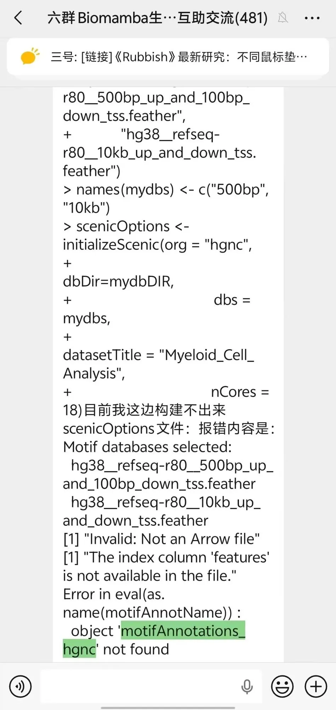

SCENIC报错 object 'motifAnnotations_hgnc' not found 解决方案
原文：https://mp.weixin.qq.com/s?__biz=MzAwMzIzOTk5OQ==&mid=2247537452&idx=1&sn=931d71c9dcfdd64feca3f099c258cc3e&chksm=9b3c2a7cac4ba36a14d198f5ccefa796069658ce883cbf9297021fe1e282467596c601c3915f#rd 合集：答读者问
一、遇到问题解决问题
有群友跑SCENIC教程时遇到了如下报错，怎么说呢，千错万错都是版本的错。应该是SCENIC和RcisTarget的版本没协调好，现在的情况是这个内置版本不能自动加载了，需要显式的手动加载出来才能使用。

手动加载这个数据就好：-
-
- *
-
library(RcisTarget)library(SCENIC)data(list="motifAnnotations_hgnc_v9", package="RcisTarget")motifAnnotations_hgnc <- motifAnnotations_hgnc_v9
如果是分析小鼠的数据，需要换一下物种：
-
- *
data(list="motifAnnotations_mgi_v9", package="RcisTarget")motifAnnotations_mgi <- motifAnnotations_mgi_v9 # 赋值给通用变量名
二、打铁还需自身硬
SCENIC是R语言scRNA-seq基因共表达网络分析的核心软件之一，往期针对SCENIC出来不少技术贴，可按需查阅：
SCENIC单细胞转录因子预测|3.软件安装与数据准备SCENIC单细胞转录因子预测|4.精简版流程SCENIC单细胞转录因子预测|5.step1+step2构建共表达网络与regulonSCENIC单细胞转录因子预测|6.Step3 利用AUCell对Regulon评分SCENIC单细胞转录因子预测|7.Step4 二元矩阵的计算与可视化SCENIC单细胞转录因子预测|8.Step5 regulon聚类、分群、降维SCENIC单细胞转录因子预测|9.下游探索 SCENIC转录因子调控网络图比R版本快几十倍| Pyscenic单细胞转录因子预测非模式物种PySCENIC分析流程 R+Python组合拳可能是分析SCENIC最好的方式
一文学会四种基因共表达网络分析
scRNA-seq基因共表达网络分析合辑
如果你想彻底吃透SCENIC转录因子调控网络图或者一文学会四种基因共表达网络分析全套内容、跟着老师系统学习，可以报名参加我们的专题课程班：R语言scRNA-seq基因共表达网络分析专题

如何联系我们

 留一个领取资料、开箱即用的单细胞分析镜像的微信号[Biomamba_zhushou]，方便各位随时交流。同时我们也构建了交流群矩阵，欢迎大家入群讨论。
大家可以阅读完这几篇之后添加给生信入门初学者的小贴士
没有检索，就没有发言权
留一个领取资料、开箱即用的单细胞分析镜像的微信号[Biomamba_zhushou]，方便各位随时交流。同时我们也构建了交流群矩阵，欢迎大家入群讨论。
大家可以阅读完这几篇之后添加给生信入门初学者的小贴士
没有检索，就没有发言权
已有生信基地联系方式的同学无需重复添加

 您点的每个赞和在看，我都认真当成了喜欢
您点的每个赞和在看，我都认真当成了喜欢